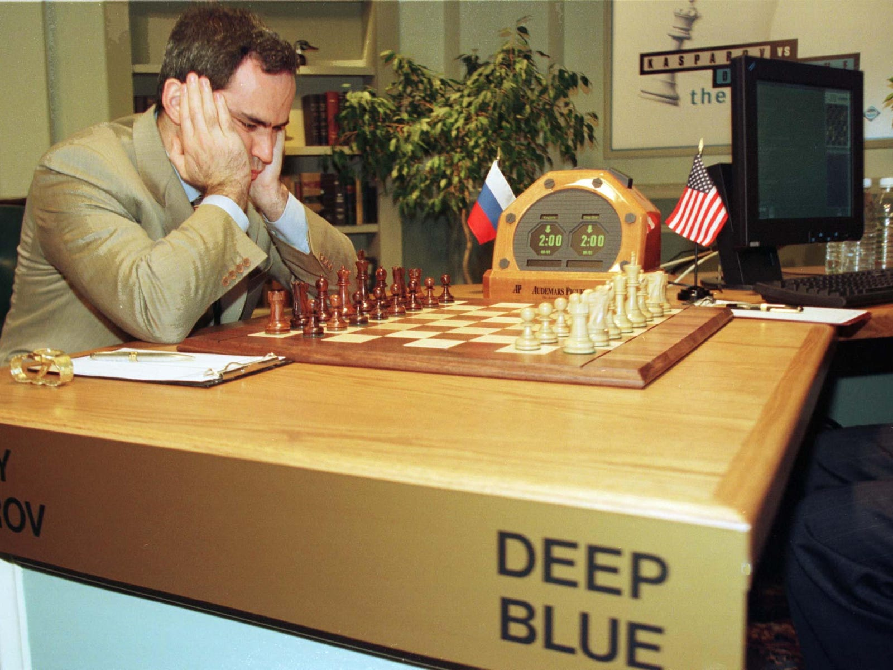

WHAT IS AI?
Artificial Intelligence (AI) refers to the simulation of human intelligence in machines that are modified to think like humans and copy their activities. The term may likewise be applied to any machine that shows characteristics related with a human psyche, for example, learning and critical thinking. From SIRI to self-driving cars...While science fiction frequently depicts AI as robots with human-like attributes, AI can incorporate anything from Google’s search algorithms to IBM’s Watson to autonomous weapons.
History of Artificial Intelligence (AI)
Artificial intelligence (AI) is a discipline of sixty years, which is a lot of sciences, theories and techniques (including mathematical logic, statistics, probabilities, computational neurobiology, computer science) that aims to copy the intellectual capacities of an individual. Started in the breath of the Second World War, its improvements are personally connected to those of processing and have driven computers to perform progressively complex errands, which could already just be appointed to a human
Nonetheless, this mechanization remains a long way from human intelligence.
1940-1960: Birth of AI
The period somewhere in the range of 1940 and 1960 was emphatically set apart by the combination of technological turns of events (of which the Second World War was a quickening agent) and the craving to understand how to unite the working of machines and natural creatures. For Norbert Wiener, a pioneer in computer science, the aim was to bring together mathematical hypothesis, hardware and mechanization as "an entire hypothesis of control and correspondence, both in creatures and machines". Not long previously, a first mathematical and computer model of the biological neuron (formal neuron) had been created by Warren McCulloch and Walter Pitts as right on time as 1943.
Toward the start of 1950, John Von Neumann and Alan Turing didn't make the term AI however were the establishing fathers of the innovation behind it: they made the progress from computers to nineteenth century decimal logic (which along these lines managed values from 0 to 9) and machines to binary logic (which depend on Boolean variable based math, managing pretty much significant chains of 0 or 1). The two specialists in this manner formalized the engineering of our contemporary computers and showed that it was an all inclusive machine, fit for executing what is modified. Turing, then again, raised the topic of the conceivable intelligence of a machine without precedent for his well known 1950 article "Figuring Machinery and Intelligence" and portrayed a "round of impersonation", where a human ought to have the option to recognize in a print discourse whether he is conversing with a man or a machine. Anyway disputable this article might be (this "Turing test" doesn't seem to fit the bill for some specialists), it will regularly be refered to as being at the wellspring of the scrutinizing of the limit between the human and the machine.
The expression "AI" could be credited to John McCarthy of MIT (Massachusetts Institute of Technology), which Marvin Minsky (Carnegie-Mellon University) characterizes as "the development of computer programs that take part in assignments that are as of now more sufficiently performed by people since they require elevated level mental procedures, for example, perceptual learning, memory association and basic thinking. The late spring 1956 gathering at Dartmouth College (subsidized by the Rockefeller Institute) is viewed as the author of the order. Narratively, it is important the incredible achievement of what was not a meeting but instead a workshop. Just six individuals, including McCarthy and Minsky, had remained reliably present all through this work (which depended basically on improvements dependent on formal logic).
While innovation remained intriguing and promising (see, for instance, the 1963 article by Reed C. Lawlor, an individual from the California Bar, entitled "What Computers Can Do: Analysis and Prediction of Judicial Decisions"), the prominence of innovation fell back in the mid 1960s. The machines had next to no memory, making it hard to utilize a computer language. In any case, there were at that point a few establishments despite everything present today, for example, the arrangement trees to take care of issues: the IPL, data preparing language, had in this way made it conceivable to compose as ahead of schedule as 1956 the LTM (logic scholar machine) program which aimed to show mathematical hypotheses.
Herbert Simon, financial specialist and humanist, forecasted in 1957 that the AI would prevail with regards to beating a human at chess in the following 10 years, however the AI at that point entered a first winter. Simon's vision end up being correct... after 30 years.

1980-1990
In 1968 Stanley Kubrick coordinated the film "2001 Space Odyssey" where a computer - HAL 9000 (just one letter away from those of IBM) sums up in itself the entire whole of moral inquiries presented by AI: will it speak to an elevated level of modernity, a useful for mankind or a peril? The effect of the film will normally not be logical however it will add to promote the topic, similarly as the science fiction creator Philip K. Dick, who will never stop to think about whether, at some point, the machines will encounter feelings.
It was with the appearance of the main microchips toward the finish of 1970 that AI took off again and entered the brilliant period of master frameworks.
The way was really opened at MIT in 1965 with DENDRAL (master framework had practical experience in sub-atomic science) and at Stanford University in 1972 with MYCIN (framework had some expertise in the analysis of blood sicknesses and physician recommended drugs). These frameworks depended on an "induction motor," which was customized to be a logical reflection of human thinking. By entering information, the motor gave answers of an elevated level of skill.
The guarantees predicted an enormous turn of events however the furor will fall again toward the finish of 1980, mid 1990. The programming of such information really required a ton of exertion and from 200 to 300 guidelines, there was a "discovery" impact where it was not satisfactory how the machine contemplated. Improvement and maintenance in this manner turned out to be very hazardous and - most importantly - quicker and in numerous different less perplexing and more affordable ways were conceivable. It ought to be reviewed that during the 1990s, the term artificial intelligence had nearly become untouchable and progressively unassuming varieties had even entered college language, for example, "propelled processing".
The achievement in May 1997 of Deep Blue (IBM's master framework) at the chess game against Garry Kasparov satisfied Herbert Simon's 1957 prediction 30 years after the fact however didn't bolster the financing and advancement of this type of AI. The activity of Deep Blue depended on a methodical animal power calculation, where every conceivable move were assessed and weighted. The annihilation of the human remained representative in the history however Deep Blue had actually just figured out how to treat an extremely restricted edge (that of the guidelines of the chess game), exceptionally a long way from the ability to display the unpredictability of the world.

Since 2010:a new bloom based on massive data and new computing power
Two variables explain the new blast in the control around 2010.
First of all, entrance to enormous volumes of information. To have the option to utilize calculations for picture grouping and feline acknowledgment, for instance, it was beforehand important to do examining yourself. Today, a basic pursuit on Google can discover millions.
Then the disclosure of the high productivity of computer designs card processors to quicken the figuring of learning calculations. The procedure being extremely iterative, it could take a long time before 2010 to process the whole example. The processing intensity of these cards (prepared to do in excess of a thousand billion exchanges for each second) has empowered significant advancement at a restricted budgetary cost (under 1000 euros for every card).
This new technological hardware has empowered some noteworthy open victories and has supported subsidizing: in 2011, Watson, IBM's IA, will win the games against 2 Jeopardy champions! ». In 2012, Google X (Google's inquiry lab) will have the option to have an AI perceive felines on a video. In excess of 16,000 processors have been utilized for this last errand, yet the potential is exceptional: a machine figures out how to recognize something. In 2016, AlphaGO (Google's AI had practical experience in Go games) will beat the European hero (Fan Hui) and the world victor (Lee Sedol) at that point herself (AlphaGo Zero). Let us indicate that the round of Go has a combinatorics substantially more significant than chess (more than the quantity of particles known to mankind) and that it is unimaginable to expect to have such critical outcomes in crude quality (with respect to Deep Blue in 1997).
Where did this supernatural occurrence originate from? A total change in outlook from master frameworks. The methodology has gotten inductive: it is not, at this point an issue of coding rules with respect to master frameworks, yet of letting computers find only them by relationship and grouping, based on a monstrous measure of information.
Among AI techniques, profound learning appears the most encouraging for various applications (including voice or picture acknowledgment). In 2003, Geoffrey Hinton (University of Toronto), Yoshua Bengio (University of Montreal) and Yann LeCun (University of New York) chose to begin an examination program to bring neural systems cutting-edge. Examinations directed at the same time at Microsoft, Google and IBM with the assistance of the Toronto research center in Hinton demonstrated that this kind of learning prevailing with regards to splitting the mistake rates for discourse acknowledgment. Comparable outcomes were accomplished by Hinton's picture acknowledgment group.
Overnight, a vast greater part of research groups went to this innovation with unquestionable advantages. This kind of learning has likewise empowered significant advancement in content acknowledgment, be that as it may, as indicated by specialists like Yann LeCun, there is as yet far to go to create content understanding frameworks. Conversational operators represent this test well: our cell phones definitely realize how to translate a guidance yet can't completely contextualize it and break down our aims.

The Difference Between AI And Regular Programing
Regular programs characterize every single imaginable situation and just work inside those characterized situations. AI 'trains' a program for a specific task and let it improve and explore on its own.A perfect AI decide what to do when met with strange situation. Microsoft Word can't enhance its own, however facial recognition software can improve at perceiving faces the more it runs.
Categories of AI :
AI divided to:
- Conventional AI.
- Computational Intelligence (CI).
Conventional AI :
Conventional AI generally includes strategies currently delegated machine learning, described by formalism and factual examination. This is likewise called symbolic AI, logical AI, neat AI and Good Old Fashioned Artificial Intelligence (GOFAI).
World Applications on Artificial Intelligence:
Machine Learning:
Machine learning algorithms recognize designs and/or anticipate results. Numerous associations sit on enormous information identified with clients, business tasks, or financials. Human examiners have constrained time and brainpower to process and explain this information. In this manner, machine learning can be used to:
- expect results given info information, similar to relapse investigation yet on a lot bigger scopes and with numerous factors. An ideal model is algorithmic exchanging, where the exchanging model must investigate enormous measures of info information and suggest gainful exchanges. As the model continues working with certifiable information, it can even 'develop' itself and adjust its exchanging procedures to economic situations.
- Discover bits of knowledge or examples in enormous informational collections that natural eyes now and again miss. For instance, an organization can concentrate how its client buy designs are developing and use the discoveries to change their product lines.
- Do much more in less time.
Example:Netflix
Netflix says they “invest heavily in machine learning to continually improve our member experience and optimize the Netflix service end-to-end.”
Neural Networks and Deep Learning:
A neural network attempts to reproduce the human brain's way to deal with breaking down information. They can distinguish, group and break down different information, manage numerous factors, and see patterns that are complex for human brains to see.
Deep learning is a subset of machine learning. At the point when applied to a neural network, it permits the network to take in without human oversight from unstructured (information that isn't grouped or named). This is ideal for breaking down 'huge information' that associations gather. These huge informational collections incorporate various information arrangements, for example, content, pictures, video and sound.
Neural networks are much of the time joined with machine learning, deep learning, and computer vision (training PCs to get importance from pictures). That is the reason individuals talk about 'deep neural networks,' which is fundamentally a neural network with multiple layers. More layers = increasingly analytical force.
Neural networks and deep learning in action: Facial recognition in China
China is doing a lot with facial recognition. Which makes sense, in light of the fact that there are cameras wherever in China. Numerous cameras mean a lot of information for deep neural networks to utilize. In light of a legitimate concern for time, here is a example.
At University:
A university in Eastern China has executed an AI-fueled attendance framework, with cameras that constantly watch students in class.
Naturally, it scans faces to watch that the student actually turns up to class. More importantly, it also analyzes facial articulations in real time, and can decide whether understudies are paying attention. It can apparently perceive individuals are sleeping or playing on their telephones.
Evolutionary Algorithms
A subset of machine learning, evolutionary algorithms self-improve after some time. They make a populace of algorithms and save the ones best at expect results. Applying 'natural selection' standard, the best algorithms are kept alive and the failures are disposed of. Segments of code from the won algorithms are utilized to make another populace of algorithms, and the choice procedure rehashes.
Popular Examples of AI
Siri:
It is an intelligent assistant that offers a faster, easier way to get things done on Apple devices
What can Siri do??
Based on the information on Apple's website:
- Siri can make calls or send texts for you whether you are driving, have your hands full, or are simply on the go. It can even announce your messages on your AirPods. It also offers proactive suggestions — like texting someone that you’re running late for a meeting — so you can stay in touch effortlessly.
- Apple Music and Siri work together beautifully which means you can ask Siri to find a new song you’ll like. Put on a favorite album. Or even answer questions about bands you love. Siri can also suggest your favorite playlist when you arrive at the gym or start your drive home. Just tap to play.
-
Now you can control your smart appliances, check their status, or even do a bunch of things at once — using just your voice. In the Home app, for example, you can create a scene named “I’m home” that opens the garage, unlocks the front door, and turns on the lights.
- Quickly check facts, do calculations, or translate a phrase into another language. It’s as simple as asking. Even when you don’t ask, Siri works behind the scenes like a personal assistant. A great example is the Siri watch face, which serves up events, news, suggestions, and more right when you need them. And the new Siri voice uses advanced neural text‑to‑speech technology to sound incredibly natural, particularly when speaking longer phrases, like when reading the news or answering knowledge questions.
- It’s amazing how quickly Siri can find photos of your kids, locate your parked car, get you a ride, or unearth what you’re looking for from massive numbers of files. And the capabilities of Siri are optimized for each device, so you get the right kind of help, anywhere you are.

Roboitics:
Robotics is an interdisciplinary research zone at the interface of computer science and designing. Robotics includes structure, development, activity, and utilization of robots. The objective of robotics is to plan intelligent machines that can help and help people in their everyday lives and guard everybody.
For example: The humanoid service robot, REEM. Added below is a link describing its capabilities:
REEM Robot
Effects of AI In The Future
| Positive Effects |
Negative Effects |
| It is accepted that Artificially Intelligent computers will be clearly utilized in the field of education. Moreover, in the medical field scientists are guessing the improvement of intelligent computers that will be invulnerable to infections. So there will be a future with no sickness.
Indeed, even now we can see little uses of artificial knowledge in our home. For instance, smart TV, smart fridge etc. Later on better uses of Artificial insight will be found in each home later on. Artificial Intelligence with nanotechnology or different advancements may offer ascent to new fields in the region of science. Machines may get increasingly refined and will be the partner of man. For certain, the improvement of artificial insight will progressively make it a piece of our every day life. |
On the off chance that there is a reasonable side there will be a negative side moreover. Despite the fact that artificial insight is having numerous points of interest applications there are such a large number of dangerous impediments moreover.
At an increasingly essential level, the utilization of artificial insight in regular undertakings may deliver laziness to people. The mindfulness that the machines have knowledge will cause human to be weak and will to be compelled to make everything done by the machines. People have an exceptional capacity to think, break down, and use judgment. On the off chance that artificial insight is utilized for explain, at that point the human psyche and its capacities may go to squander.
Logical Films today speaks to the improvements that can occur on what's to come. The a large portion of the logical movies on artificial insight speaks to the negative side of artificial knowledge. For instance in the event that we take film 'I ROBOT' as model, it speaks to a robot going frantic against society and turning into a quality to the mankind. There are numerous Hollywood movies speaking to a similar thought. Movies like 'Eliminator' likewise speak to the robots with artificial insight going distraught against the mankind.
Uses of artificial knowledge with nanotechnology in military field have numerous positive preferences like , to build up an ideal cautious shield to any assaults. Be that as it may, it have a risk side too. With the assistance of artificial knowledge and nanotechnology we will have the option to grow exceptionally amazing and ruinous weapons. In the Hollywood film 'G.I. JOE' the weapons made by the use of nanotechnology and artificial insight is appeared
On the off chance that we offer knowledge to machines, they will have the option to use it in its most extreme expand. What's more, machines with insight will turn out to be more intelligent than its makers. In this way, there will be an opportunity of mankind leveled out machines.
In future there might be more sorts of robots with artificial knowledge. Uses of artificial insight in military field will offered ascend to progressively modern and easy to understand fighting methodologies. By the innovation of artificial knowledge scientists will have the option to demonstrate that human insight is absolutely mechanical and can be copied. In the event that this occurs, it would break man's perspective on himself as a one of a kind being. The future artificially intelligent machines can turn out to be significantly more intelligent than people. By that, there will be a circumstance of man versus machines like we see in logical fiction films. |